Architecture tropicale
Trois microprojets présentés séparément : un restaurant, une étude d'aménagement de studio et un escalier d'hôtel. Chaque étude met en avant le passage de l'intention au dessin construit.

Cette page rassemble plusieurs exercices autonomes. Le restaurant travaille l'organisation des usages et les élévations de mobilier. Le studio se concentre sur l'intégration murale et la précision du dessin. L'escalier développe une pièce architecturale complète, du plan général au détail constructif.
Microprojet · restauration
Organisation d'un restaurant en plusieurs ambiances : bar, salle principale, lounge et espace gourmand. Les plans et élévations traduisent la circulation, l'accessibilité et la composition du mobilier sur mesure.
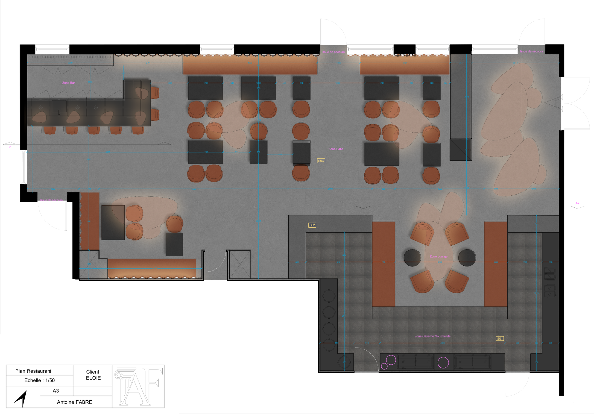
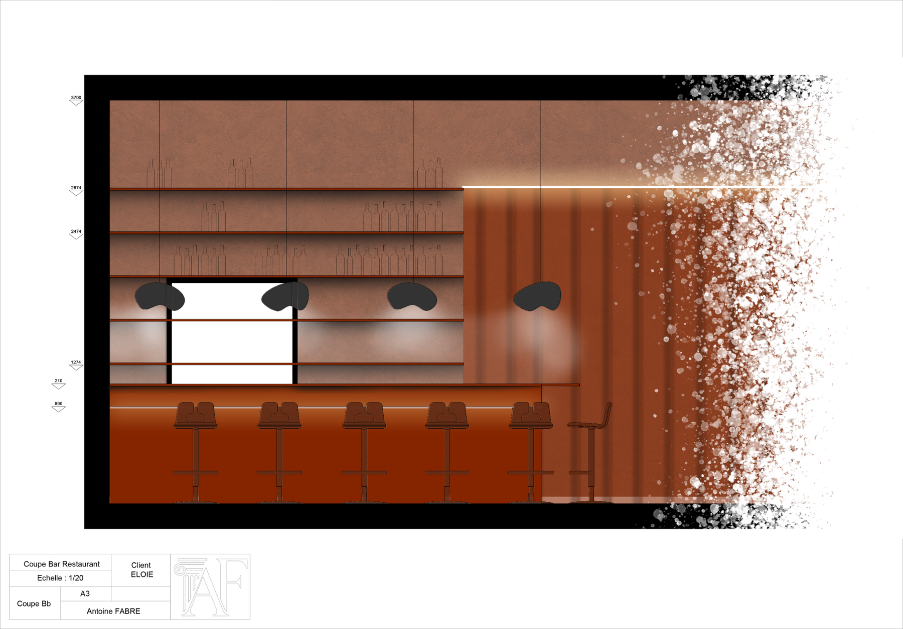
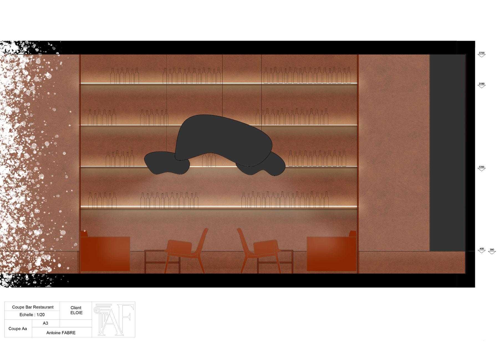
Microprojet · habitat compact
Une étude d'élévation consacrée à un mobilier mural continu. Le dessin organise rangement, assises et éclairage dans une composition sobre, adaptée à un petit espace.
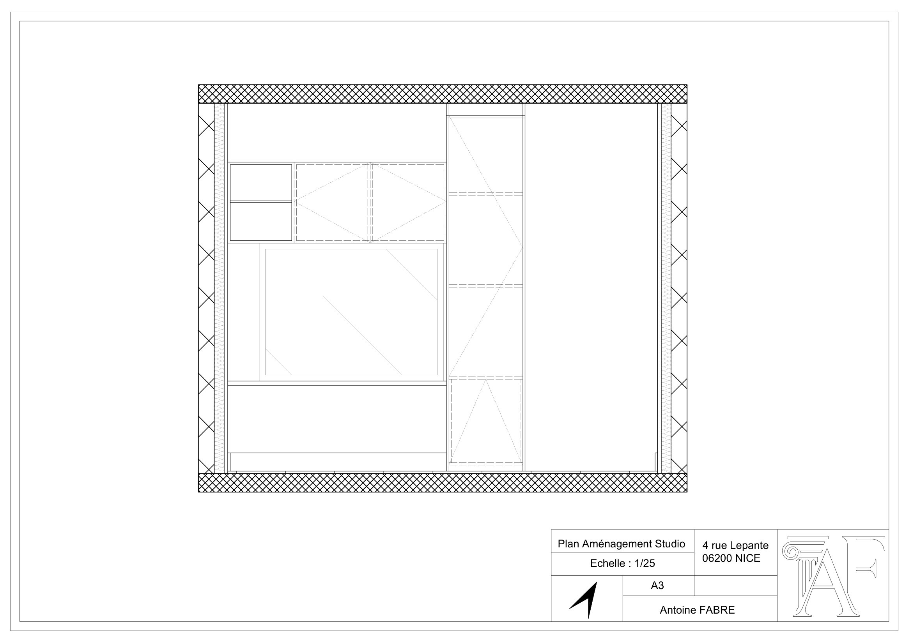
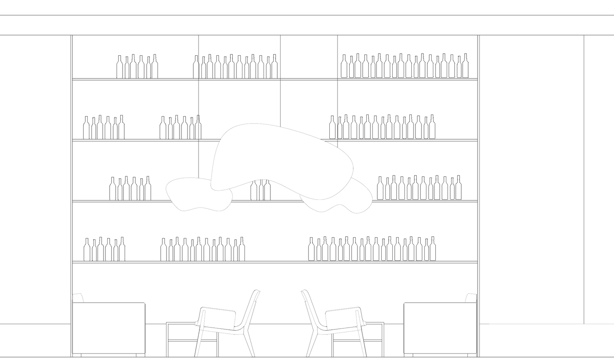
Microprojet · circulation verticale
Conception d'un escalier monumental à double volée pour relier le patio central à une coursive. Le projet est développé à travers les deux niveaux, les élévations, la coupe et les détails dimensionnels.
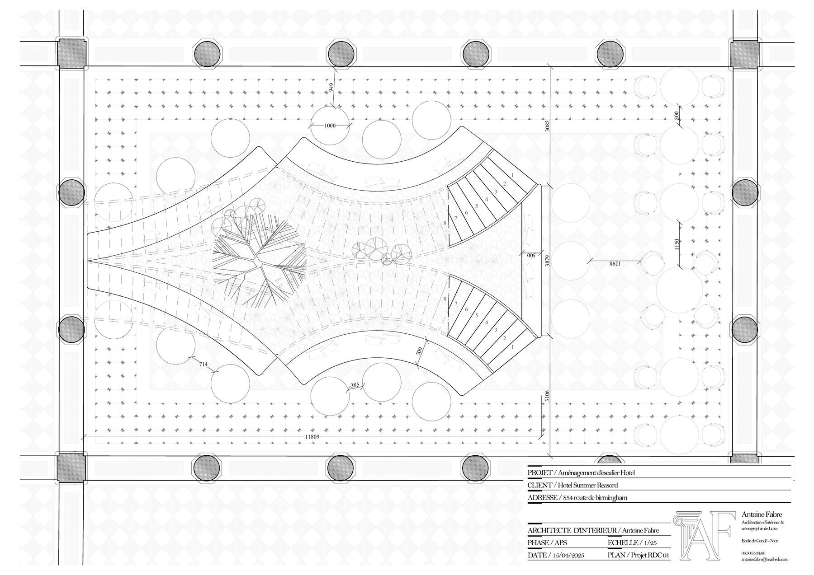
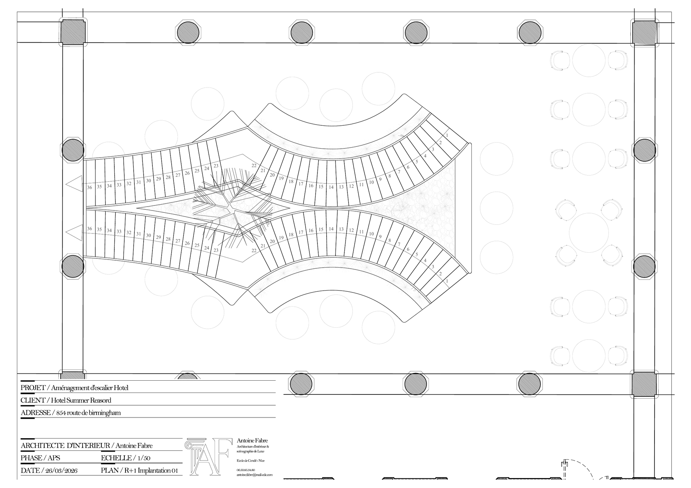
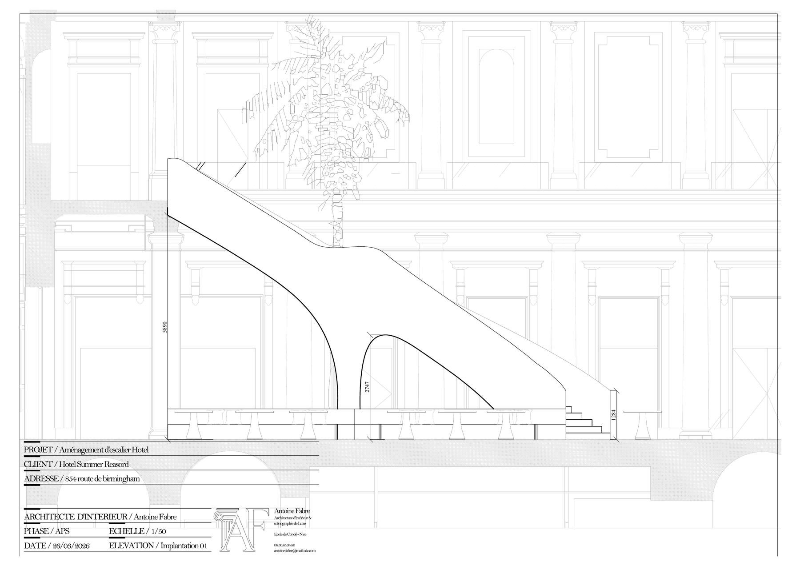
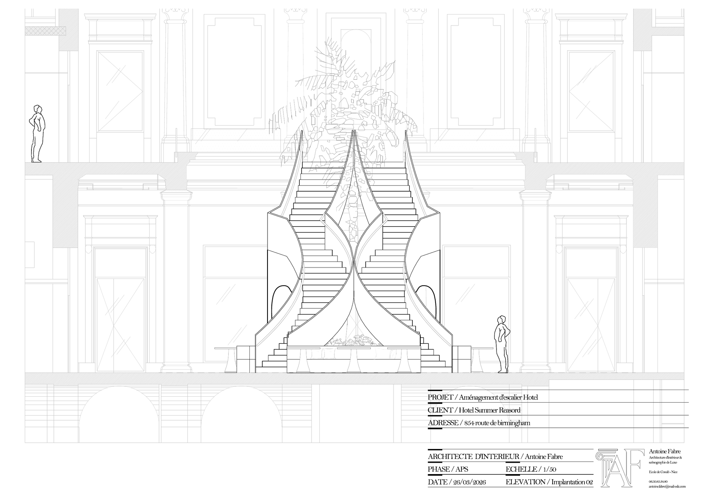
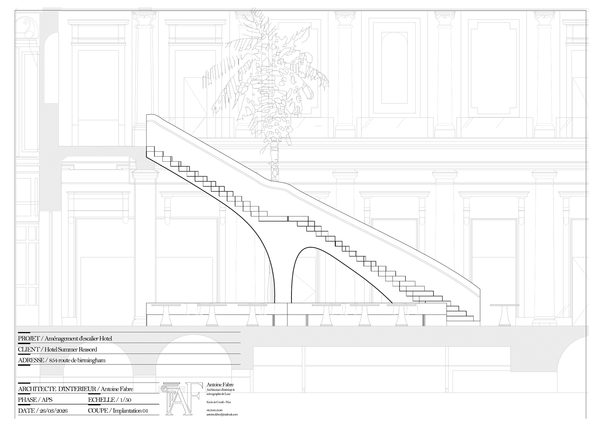
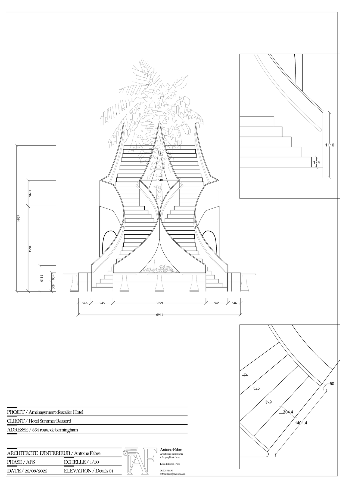